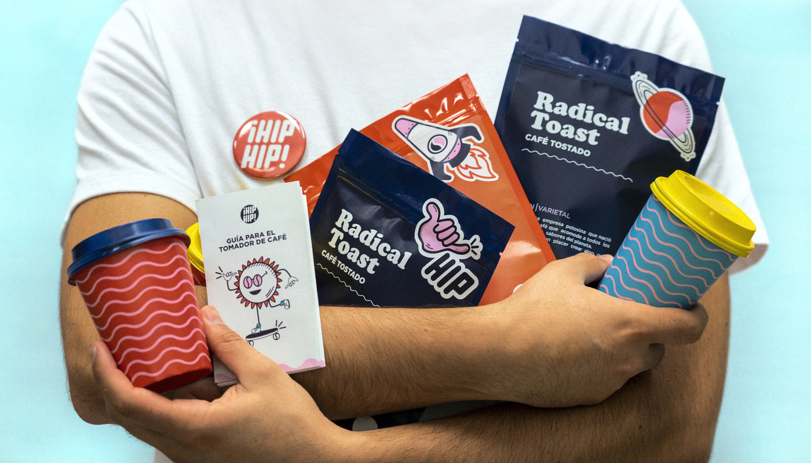

AI Safety & Evaluation
Breaking conversational AI before it ships — and rating what survives.
Content and knowledge strategist turned AI-safety practitioner. I design jailbreaks and prompt-injection attacks to find where models bend — and bring nine years of editorial, SEO and knowledge-management rigor to everything a human still has to read.
Articles, case studies and design collections from the original rosehillariose.com portfolio — from supply-chain cybersecurity explainers to post-COVID brand analysis.

ArticleBreaking conversational AI before it ships — and rating what survives.
Strategy, SEO and knowledge bases that answer the question the first time.
Deadline-critical operations for a UK retail estate — zero missed sign-offs.
I spent nine years making words work — product content at eCommerce scale at Infosys BPM for Currys PLC, knowledge systems and SEO at PiServe, brand voice for an edutech stealth startup, and skilling curricula for the Government of Kerala's ASAP programme.
Now I also test the machines that draft words. As an AI Safety Expert with Mercor, I design adversarial attacks on production conversational AI — jailbreaks, prompt injections, multi-turn manipulation — and turn what survives into rubric-scored, evidence-backed reports.
An English-literature postgraduate (M.A., St. Xavier's College, Kochi) writing in both English and native Malayalam, I stay honest to a simple rule: clarity first, flourish second — and never invent a citation.
If your team needs red-teaming with editorial discipline, or content that survives both compliance and readers, I'd love to hear about it.